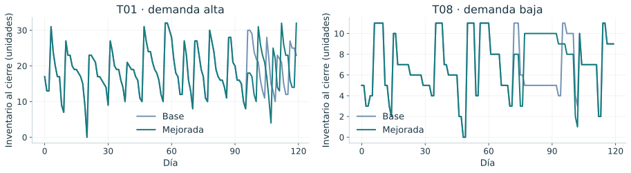
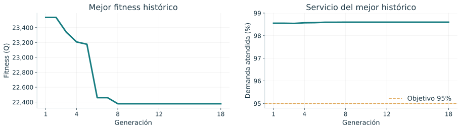
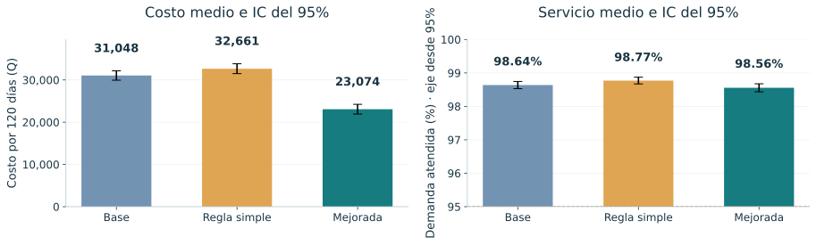
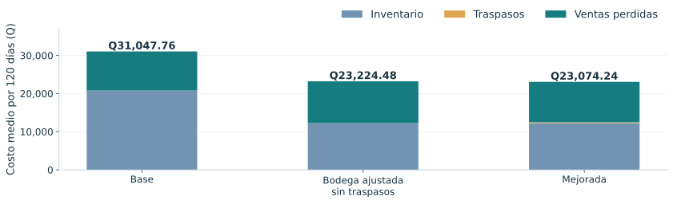
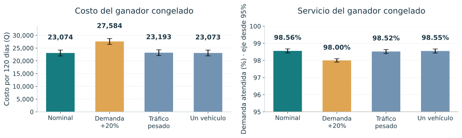
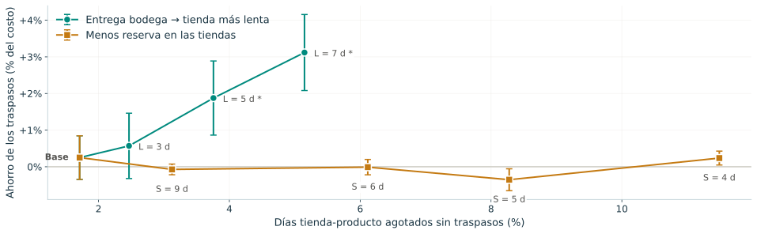
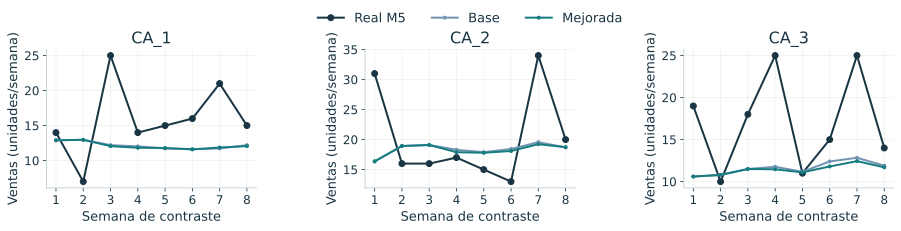
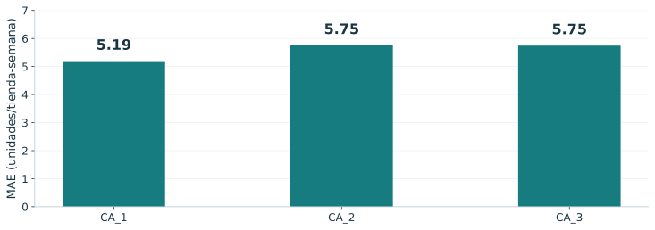

Proyecto 2 · Modelación y Simulación
Universidad del Valle de Guatemala
Facultad de Ingeniería
Traspasos de
inventario entre
tiendas
Simular, optimizar y contrastar
antes de recomendar.
Integrantes
Javier Alejandro Chávez León
23132
Daniel Adolfo Sarmiento Peralta
231105
Sofía López Ayerdi · 231929
Karen Ximena Toledo Juárez · 23692
Luis Francisco Padilla Juárez · 23663
Guatemala, 10 de noviembre de 2026
Recorrido de la presentación
Del problema a una conclusión
respaldada por los resultados.
1 · Punto de partida
Problema
Objetivos
Fuentes
2 · Solución propuesta
Técnica investigada
Modelo
Implementación
3 · Cómo se evalúa
Diseño experimental
Validación
Comparación real
Cinco bloques de tres minutos. Las cifras sintéticas y las observaciones reales se presentan por separado.
01 / Problema
El producto existe.
Pero no siempre donde se necesita.
Una misma cadena puede tener exceso en una tienda y demanda sin atender en otra. La reposición desde bodega no siempre llega antes de la venta perdida.
Tienda donante
Unidades con baja urgencia de venta.
Decisión de traslado
Costo de viaje, tiempo y riesgo para el donante.
Tienda receptora
Demanda que podría perderse antes de reponer.
02 / Objetivos
Medir el efecto sobre costo,
servicio y ventas perdidas.
Objetivo general: evaluar una política de traspasos ajustada con un genético, distinguiendo el desempeño del modelo de su correspondencia con ventas reales.
y reposición diaria.
y sensibilidad.
Costo total como objetivo principal.
Servicio y pérdidas como resultados que también deben explicarse.
03 / Fuentes
Dos conjuntos. Dos alcances.
Los datos sintéticos permiten controlar el experimento. M5 aporta ventas reales para examinar si el patrón simulado se transfiere a un contexto externo.
Contrato sintético
Tiendas × productos × días.
Clases alta, media y baja; costos estimados y reglas supuestas. Optimización y comparación controlada.
Ventas reales públicas M5
Tiendas × productos × días de contraste.
Ventas Walmart observadas. Inventario, ubicación operativa y costos no observados.
Fuentes: Kaggle M5 / copia Nixtla. Fundamentos: Eiben y Smith (2015), Deb (2000), Amaran et al. (2016). Detalle en el informe.
05 / Modelo · entradas
Qué recibe el simulador.
Tres tipos de entrada: datos de tiendas y demanda, parámetros de costos y reposición, y los genes que decide el genético.
Datos · data/synthetic
- tiendas.csv: 10 tiendas, tipo alta, media o baja y coordenadas.
- demanda.csv: media y dispersión por tienda, producto y día de la semana.
- 3 productos con margen de Q12, Q35 y Q90 por unidad.
Parámetros · config.yaml
- Mantener inventario: Q0.08 por unidad-día.
- Viaje: Q60 + Q4/km; 2 vehículos de 150 unidades.
- Tiendas: entrega 2 d, seguridad 3 d, S = 12 d.
- Bodega: entrega 7 d, s = 10 d, S = 30 d.
Decisión y control
- 11 genes: s y S de bodega, H y SS por tipo de tienda, umbral V, peso de tráfico y hora.
- Réplicas de 120 días; inventario inicial de 7 y 21 días.
- Semillas 1–10, 11–40 y 1001–1030.
Costos y reglas de reposición son estimaciones o supuestos etiquetados en config.yaml. La demanda sintética se generó con semilla 20261109.
05 / Modelo
Un sistema diario con reposición y movimientos laterales.
La demanda es Poisson o binomial negativa. El pronóstico usa cuatro semanas por día semanal; las ventas no atendidas se pierden, no quedan pendientes.

Orden: llegadas → ventas → traspasos → reposición (s, S) → costos y balances.
05 / Modelo · pasos
Cinco pasos por día,
siempre en el mismo orden.
05 / Modelo · costos y decisión
Un traslado debe pagar su viaje.
El costo total suma inventario, transporte y margen de ventas perdidas. El indicador V decide si el beneficio esperado de mover productos supera su costo y riesgo.
− costo del viaje − penalización de tráfico
Beneficio
Ventas que el receptor puede atender a tiempo.
Protección
Reserva H + SS y mínimo de exhibición.
Logística
Q60 por viaje + Q4/km; productos consolidados.
Parámetros económicos estimados. La penalización de tráfico afecta decisión, no el gasto físico registrado.
06 / Implementación
Carga óptima por ruta.
Selección voraz de viajes.
Python integra motor, políticas, genético y experimentos. NetworkX selecciona la carga de cada viaje; el estado se actualiza antes de asignar el siguiente vehículo.
Flujo de costo mínimo
- Beneficio marginal por unidad.
- Capacidad común entre productos.
- Opción de dejar capacidad sin usar.
Restricciones
- Exceso y exhibición del donante.
- Tránsito y conservación.
- Un viaje por vehículo y día.
05 / Modelo en funcionamiento
El inventario cae con ventas y sube con llegadas.
P03, semilla 1001: dos tiendas seleccionadas a priori. Cada línea es una réplica de 120 días; no es un promedio.

Lectura: las trayectorias coinciden muchos días y luego se separan. No hay una mejora uniforme en todas las tiendas; un cierre en cero no demuestra por sí solo una venta perdida.
Eje vertical: unidades al cierre. Base y mejorada usan exactamente la misma demanda por semilla.
04 / Técnica investigada
El genético ajusta reglas,
no miles de movimientos.
La simulación evalúa cada candidato. Reparación de restricciones, réplicas comunes y reevaluación de finalistas amplían el genético básico visto en clase.
Genes por tipo
H y SS para demanda alta, media y baja.
Genes de bodega
s y S en días de demanda de la cadena.
Genes de decisión
Umbral V, peso de tráfico y hora de despacho.
Torneo k = 3 · cruce uniforme 0.85 · mutación gaussiana 0.10 por hijo · elitismo 2 · reparación.
06 / Implementación · evaluación
Misma demanda para comparar.
Demanda nueva para evaluar.
Entrenamiento
Semillas comunes.
Reevaluación
Cinco finalistas.
Evaluación final
No selecciona candidatos.
Semilla local del genético: 20261109. Servicio 95% es una restricción blanda, no una garantía.
10 / Resultados · optimización
La búsqueda mejora hasta la generación 8.
30 individuos y máximo 50 generaciones. La parada en la generación 18 responde a diez sin mejora; se evaluaron 176 candidatos distintos.

Lectura: menor fitness es mejor bajo el objetivo definido. La convergencia no demuestra ni óptimo global ni ahorro frente a la base; eso requiere el experimento comparativo.
Ganador: bodega 6/15 días; H/SS alta 4/6, media 3/4 y baja 1/3; umbral Q129.66. Fitness y costo coinciden sin penalización.
06 / Implementación · salidas
Qué entrega cada corrida.
Métricas por réplica
- Costo total = inventario + traslados + ventas perdidas.
- Nivel de servicio y unidades perdidas.
- Viajes consolidados y kilómetros.
Series diarias
- Inventario al cierre por tienda y producto.
- Inventario de bodega.
- Demanda, ventas y pérdidas por día.
Evidencia guardada
- ganador.json y su historial.
- Resultados por semilla, IC del 95% y pruebas pareadas con Holm.
- Manifiesto con semillas, versiones y SHA-256.
07 / Diseño experimental
8 condiciones × 30 réplicas.
Un ganador congelado.
240 réplicas con semillas 1001–1030. Los controles separan el cambio de bodega del aporte específico de los traspasos.
Políticas
Base
Regla simple
Mejorada
Controles
Solo bodega ajustada
Traspasos con bodega original
Sensibilidad
Demanda +20%
Tráfico ×2
Un vehículo
Inferencia
IC del 95%
t pareada + Holm
Wilcoxon adicional
10 / Resultados sintéticos
Menor costo.
No menos faltantes.
Costo total
Q31,047.76 → Q23,074.24
Unidades perdidas
175.20 → 185.77
Servicio
Puntos porcentuales.
98.6372% → 98.5556%
IC pareado: Q7,651.17–Q8,295.86 · p-Holm = 1.33 × 10⁻²⁸.
10 / Resultados · comparación
El costo y el servicio cuentan historias distintas.
Las barras resumen 30 réplicas por política; los segmentos representan IC individuales del 95%. Los costos son por 120 días.

Lectura: la regla simple evita más faltantes, pero sus viajes elevan el costo 5.20%. La mejorada minimiza el costo, no todos los indicadores a la vez.
El eje de servicio comienza en 95%. El solapamiento de IC individuales no sustituye la prueba de diferencias pareadas.
10 / Resultados · atribución
La reducción se concentra en mantener menos inventario.
Cada barra separa inventario, traslados y margen perdido. El control de bodega ajustada no permite ningún traspaso.

Lectura: agregar traspasos a bodega ajustada ahorra Q150.24 en promedio, pero el IC de diferencia [−Q411.96; +Q111.49] incluye cero: p-Holm = 1.
El ajuste de bodega explica 98.12% del ahorro medio neto en esta descomposición secuencial; no es una atribución causal universal.
10 / Resultados · sensibilidad
El aumento de demanda es el estrés más importante.
Se conserva el ganador sin reentrenar. En demanda +20%, inventario inicial y niveles de reposición permanecen constantes.

Lectura: demanda +20% aumenta costo 19.54% y reduce servicio a 98.0022%. Tráfico y flota no son significativos después de Holm; eso no prueba equivalencia.
Medias e IC del 95%; tráfico ×2 en todas las franjas o un vehículo en lugar de dos, sin cambiar otros parámetros.
07 / Diseño experimental · análisis adicional
¿Bajo qué condiciones
sí convienen los traspasos?
Se repitió la comparación con y sin traspasos en cadenas distintas. Es exploratorio: se diseñó después de los resultados principales.
Menos reserva en tiendas
S = 12, 9, 6, 5 y 4 días de demanda; seguridad proporcional.
Entrega más lenta desde bodega
L = 2, 3, 5 y 7 días; seguridad y tamaño de pedido constantes.
10 / Resultados · condiciones
Los traspasos ahorran cuando la reposición tarda.
Ahorro medio e IC del 95% frente a los días agotados sin traspasos · * = significativo con Holm.

Lectura: con entrega de 5 y 7 días ahorran 1.88% y 3.12% (p-Holm 0.003 y < 0.001) y suben el servicio 0.35 y 0.43 puntos. Con menos reserva, aun con 11.5% de días agotados, no hay ahorro significativo.
Un traspaso tarda al menos un día: con entrega de 2 días solo adelanta un día la reposición y no paga el viaje.
08 / Validación
La prueba externa
no reutiliza la calibración.
El motor y sus balances pasan 155 pruebas. La validez externa se examina por separado: reproducir el software no implica reproducir la operación real.
Calibración
28 oct 2015 → 28 feb 2016
Media y dispersión por día semanal.
Contraste reservado
29 feb → 24 abr 2016
24 observaciones reales tienda-semana.
30 réplicas por política; no 720 observaciones reales.
ZIP público y SHA-256 verificados. Reejecución de las 60 réplicas: cuatro archivos numéricos idénticos.
09 / Comparación real
El contraste muestra
correspondencia limitada.
| Métrica | Real M5 | Base | Mejorada |
|---|---|---|---|
| Ventas totales | 426 | 337.67 | 334.67 |
| MAE tienda-semana | — | 5.56 | 5.61 |
| Error absoluto relativo | — | 31.35% | 31.63% |
| Servicio simulado | No observado | 95.32% | 94.51% |
No hubo traspasos: el cambio de costo no mide una mejora por traslados.
09 / Comparación real · trayectorias
Las ventas reales varían más que las medias simuladas.
Tres productos agregados por tienda y semana. La línea oscura es la observación M5; las otras dos son medias de 30 réplicas.

Lectura: la base simula 337.67 ventas frente a 426 observadas: −20.74%. La media de réplicas suaviza el ruido; no debe interpretarse como una realización individual.
29 de febrero–24 de abril de 2016. Unidades por semana; no son ventas ni ubicaciones reales de tiendas guatemaltecas.
09 / Comparación real · error
El error se mide en las mismas unidades que las ventas.
MAE de la base: promedio del error absoluto en ocho semanas por tienda. Un menor valor indica más proximidad a las ventas observadas.

Lectura: MAE global 5.56 unidades/tienda-semana y error absoluto relativo 31.35%. Este último no es el error neto de −20.74%: no permite cancelaciones.
24 observaciones reales, no 24 × 30 observaciones independientes. No se fijó un umbral ex ante para declarar validación favorable.
11 / Limitaciones
Qué respalda el estudio.
Y dónde termina.
Respaldado
- 155 pruebas y balances.
- Comparaciones reproducibles.
- Ahorro de traspasos con entrega de 5–7 días.
- Datos reales de ventas M5.
No demostrado
- Óptimo global.
- Costos reales o inventario Walmart.
- Beneficio de traspasos en el escenario base.
- Validez operacional universal.
14 / Contribuciones
Cinco áreas de trabajo,
un proyecto integrado.
Equipo de trabajo
| Javier Alejandro Chávez León | 23132 |
| Daniel Adolfo Sarmiento Peralta | 231105 |
| Sofía López Ayerdi | 231929 |
| Karen Ximena Toledo Juárez | 23692 |
| Luis Francisco Padilla Juárez | 23663 |
Aportes incorporados
- Simulación y pronóstico.
- Costos y políticas de traspasos.
- Genético y restricciones.
- Experimentación y estadística.
- Contraste con ventas reales M5.
- Análisis de condiciones.
Uso de inteligencia artificial declarado en el apartado 14.4 del informe · UVG · Facultad de Ingeniería · Modelación y Simulación.
12–13 / Conclusiones y referencias
Optimizar exige
explicar el mecanismo.
01. Hay ahorro sintético, pero no reducción simultánea de faltantes.
02. El ahorro proviene sobre todo de la bodega; en el escenario base los traspasos no agregan ahorro demostrable.
03. Los traspasos ahorran 1.9–3.1% cuando la reposición tarda 5–7 días; quitar reserva no basta.
04. M5 muestra límites de transferencia: todavía no es una recomendación operativa.
Referencias esenciales
- Eiben y Smith (2015). Introduction to Evolutionary Computing.
- Deb (2000). Manejo de restricciones en algoritmos genéticos.
- Amaran et al. (2016). Optimización mediante simulación.
- Kaggle M5 / Nixtla. Ventas y calendario públicos.
Guatemala, 10 de noviembre de 2026 · Modelación y Simulación.